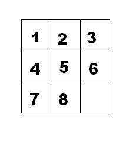

14 、BFS
1、模板
queue <类型> Q;
Q.push(最初状态);
while(!Q.empty()){
类型 u=Q.front(); Q.pop();
for(枚举所有可扩展到的状态){
if(满足入队条件){
Q.push(状态); //维护某些必要信息
}
}
}
例题
e.g.40 马的遍历
题目描述
有一个 \(n \times m\) 的棋盘，在某个点 \((x, y)\) 上有一个马，要求你计算出马到达棋盘上任意一个点最少要走几步。
输入格式
输入只有一行四个整数，分别为 \(n, m, x, y\)。
输出格式
一个 \(n \times m\) 的矩阵，代表马到达某个点最少要走几步（不能到达则输出 \(-1\)）。
样例
样例输入
样例输出
提示
数据规模与约定
对于全部的测试点，保证 \(1 \leq x \leq n \leq 400\)，\(1 \leq y \leq m \leq 400\)。
#include <bits/stdc++.h>
using namespace std;
const int N = 405;
struct node {
int x, y;
int s; // 走了多少步
};
int g[N][N];
int dir[8][2] = {{-1, -2},
{-2, -1},
{-2, 1},
{-1, 2},
{1, 2},
{2, 1},
{2, -1},
{1, -2}}; // 8个方向
int x, y, n, m;
queue<node> q;
int main() {
cin >> n >> m >> x >> y;
memset(g, -1, sizeof(g)); // 让数组都变成-1，也可以两层循环，但不能设成其他值（会出错）
g[x][y] = 0;
q.push({x, y, 0});
while (!q.empty()) {
node now = q.front();
q.pop();
int x = now.x, y = now.y, s = now.s; // 取出队头元素
for (int i = 0; i <= 7; i++) {
int nx = x + dir[i][0];
int ny = y + dir[i][1];
if (nx < 1 || nx > n || ny < 1 || ny > m || g[nx][ny] != -1)
continue; // 越界或者已经走过
g[nx][ny] = s + 1; // 记录步数
q.push({nx, ny, s + 1}); // 入队
}
}
for (int i = 1; i <= n; i++) {
for (int j = 1; j <= m; j++) {
cout << g[i][j] << " ";
}
cout << endl;
}
}
e.g.41 奇怪的电梯
题目描述
呵呵，有一天我做了一个梦，梦见了一种很奇怪的电梯。大楼的每一层楼都可以停电梯，而且第 \(i\) 层楼（\(1 \le i \le N\)）上有一个数字 \(K_i\)（\(0 \le K_i \le N\)）。电梯只有四个按钮：开，关，上，下。上下的层数等于当前楼层上的那个数字。当然，如果不能满足要求，相应的按钮就会失灵。例如： \(3, 3, 1, 2, 5\) 代表了 \(K_i\)（\(K_1=3\)，\(K_2=3\)，……），从 \(1\) 楼开始。在 \(1\) 楼，按“上”可以到 \(4\) 楼，按“下”是不起作用的，因为没有 \(-2\) 楼。那么，从 \(A\) 楼到 \(B\) 楼至少要按几次按钮呢？
输入格式
共二行。
第一行为三个用空格隔开的正整数，表示 \(N, A, B\)（\(1 \le N \le 200\)，\(1 \le A, B \le N\)）。
第二行为 \(N\) 个用空格隔开的非负整数，表示 \(K_i\)。
输出格式
一行，即最少按键次数，若无法到达，则输出 -1。
样例
样例输入
样例输出
提示
对于 \(100 \%\) 的数据，\(1 \le N \le 200\)，\(1 \le A, B \le N\)，\(0 \le K_i \le N\)。
本题共 \(16\) 个测试点，前 \(15\) 个每个测试点 \(6\) 分，最后一个测试点 \(10\) 分。
#include <bits/stdc++.h>
using namespace std;
int N, A, B, w[205];
struct node { // 定义一个结构体，用于存储队列中的元素
int floor; // 当前楼层
int time; // 到达当前楼层所需的时间
};
queue<node> q; // 定义一个队列，用于广度优先搜索
bool vis[205]; // 定义一个布尔数组，用于标记是否已经访问过某一层
int main() {
cin >> N >> A >> B;
for (int i = 1; i <= N; i++) {
cin >> w[i];
}
q.push({A, 0}); // 将起始楼层加入队列，并初始化时间为0
vis[A] = 1; // 标记起始楼层为已访问
while (!q.empty()) { // 当队列不为空时，进行循环
node now = q.front(); // 获取队列的第一个元素
q.pop(); // 将该元素从队列中移除
int f = now.floor;
int t = now.time;
if (f == B) { // 如果当前楼层是目标楼层
cout << t; // 输出到达目标楼层所需的时间
return 0; // 结束程序
}
// 尝试向上跳
if (f + w[f] <= N && vis[f + w[f]] == 0) { // 如果可以向上跳，并且目标楼层未被访问
vis[f + w[f]] = 1; // 标记为已访问
q.push({f + w[f], t + 1}); // 将新楼层加入队列，并增加时间
}
// 尝试向下跳
if (f - w[f] >= 1 && vis[f - w[f]] == 0) { // 如果可以向下跳，并且目标楼层未被访问
vis[f - w[f]] = 1; // 标记为已访问
q.push({f - w[f], t + 1}); // 将新楼层加入队列，并增加时间
}
}
cout << -1 << endl; // 如果队列为空，说明无法到达目标楼层，输出-1
return 0;
}
e.g.42 [蓝桥杯 2018 省 AB] 全球变暖
题目描述
你有一张某海域 \(N \times N\) 像素的照片，. 表示海洋、 # 表示陆地，如下所示：
其中 "上下左右" 四个方向上连在一起的一片陆地组成一座岛屿。例如上图就有 \(2\) 座岛屿。
由于全球变暖导致了海面上升，科学家预测未来几十年，岛屿边缘一个像素的范围会被海水淹没。具体来说如果一块陆地像素与海洋相邻（上下左右四个相邻像素中有海洋），它就会被淹没。
例如上图中的海域未来会变成如下样子：
请你计算：依照科学家的预测，照片中有多少岛屿会被完全淹没。
输入格式
第一行包含一个整数 \(N\)。\((1 \le N \le 1000)\)。
以下 \(N\) 行 \(N\) 列代表一张海域照片。
照片保证第 \(1\) 行、第 \(1\) 列、第 \(N\) 行、第 \(N\) 列的像素都是海洋。
输出格式
一个整数表示答案。
样例
样例输入
样例输出
提示
时限 1 秒, 256M
#include <bits/stdc++.h>
using namespace std;
const int N = 1e3 + 10;
struct node {
int x, y;
};
int dir[4][2] = {{1, 0}, {0, 1}, {-1, 0}, {0, -1}};
char g[N][N];
bool vis[N][N];
int n, ans;
int bfs(int sx, int sy) {
queue<node> q;
q.push({sx, sy});
vis[sx][sy] = 1;
bool flag = 0;
while (!q.empty()) {
node now = q.front();
q.pop();
int x = now.x, y = now.y;
if (g[x + 1][y] == '#' && g[x - 1][y] == '#' && g[x][y + 1] == '#' && g[x][y - 1] == '#')
flag = 1;
for (int i = 0; i <= 3; i++) {
int nx = x + dir[i][0];
int ny = y + dir[i][1];
if (nx < 1 || nx > n || ny < 1 || ny > n || vis[nx][ny] || g[nx][ny] == '.')
continue;
vis[nx][ny] = 1;
q.push({nx, ny});
}
}
if (flag == 1)
return false;
else
return true;
}
int main() {
cin >> n;
for (int i = 1; i <= n; i++)
scanf("%s", g[i] + 1);
for (int i = 1; i <= n; i++)
for (int j = 1; j <= n; j++) {
if (g[i][j] == '#' && vis[i][j] == 0) {
if (bfs(i, j))
ans++;
}
}
cout << ans << endl;
return 0;
}
e.g.43 九宫重排
题目描述
如下图的九宫格中，放着 1 ~ 8 的数字卡片，还有一个格子空着。与空格子相邻的格子中的卡片可以移动到空格中。 经过若干次移动，可以形成图 2 所示的局面。

我们把上图的局面记为：12345678.
把下图的局面记为：123.46758

显然是按从上到下，从左到右的顺序记录数字，空格记为句点。
题目的任务是已知九宫的初态和终态，求最少经过多少步的移动可以到达。如果无论多少步都无法到达，则输出 -1。
输入描述
输入第一行包含九宫的初态，第二行包含九宫的终态。
输出描述
输出最少的步数，如果不存在方案，则输出 -1。
输入输出样例
示例
输入
输出
Tip
字符串→二维数组→字符串
#include <bits/stdc++.h>
using namespace std;
struct node {
string s;
int k;
};
int dir[4][2] = {{0, 1}, {1, 0}, {-1, 0}, {0, -1}};
string start, goal;
queue<node> q;
map<string, int> m;
int main() {
cin >> start >> goal;
q.push({start, 0});
m[start] = 1;
while (!q.empty()) {
node now = q.front();
q.pop();
string s = now.s;
int k = now.k;
int p = 0, x, y;
if (s == goal) {
cout << k << endl;
return 0;
}
for (int i = 0; i < s.size(); i++)
if (s[i] == '.')
p = i;
x = p / 3 + 1, y = p % 3 + 1;
for (int i = 0; i <= 3; i++) {
int nx = x + dir[i][0];
int ny = y + dir[i][1];
if (nx < 1 || nx > 3 || ny < 1 || ny > 3)
continue;
int np = (nx - 1) * 3 + ny - 1;
string ns = s;
swap(ns[p], ns[np]);
if (m[ns])
continue;
m[ns] = 1;
q.push({ns, k + 1});
}
}
cout << -1 << endl;
return 0;
}
e.g.44 质数拼图游戏
题目描述
拼图游戏由一个3×3的棋盘和数字1-9组成。目标是达到以下最终状态： 1 2 3 4 5 6 7 8 9 每次如果相邻两个数字之和为质数，则可以进行交换。 相邻：上下左右四联通 给定一个棋盘初始状态，求到达最终状态的最短步数。
输入格式
第一行为正整数T，表示存在T组测试数据，1≤T≤50。 对于每组测试数据，输入3行，每行3个数字表示棋盘。 输入保证合法，棋盘中的9个数字仅为1-9。
输出格式
对于每组测试数据输出一个整数表示答案。如果无法到达最终状态，输出-1。
输入样例
输出样例
数据范围与提示
第一组测试数据的6步如下：